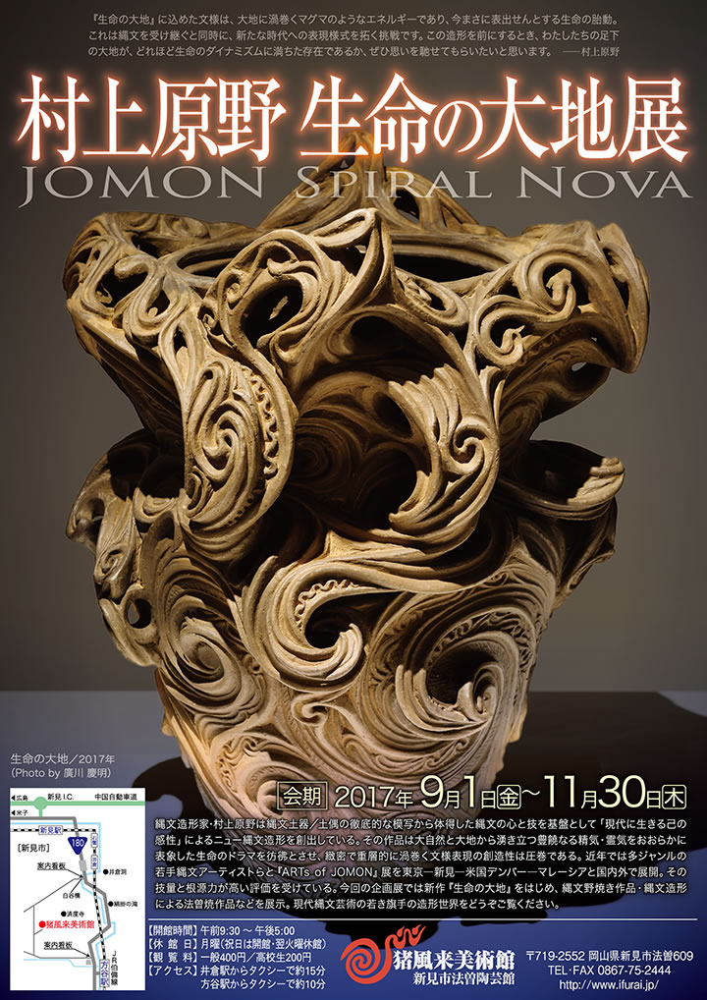

|  |
| 【村上原野 生命の大地展 チラシ】 →PDF版を開く |
『生命の大地』に込めた文様は、
大地に渦巻くマグマのようなエネルギーであり、
今まさに表出せんとする生命の胎動。
これは縄文を受け継ぐと同時に、
新たな時代への表現様式を拓く挑戦です。
この造形を前にするとき、
わたしたちの足下の大地が、
どれほど生命のダイナミズムに満ちた存在であるか、
ぜひ思いを馳せてもらいたいと思います。
――村上原野
=∴=∵=∴=∵=∴=∵=∴=∵=∴=∵=∴=∵=∴=∵=∴=∵=∴=∵=∴=∵=∴=∵=∴=∵=∴=∵=∴=
縄文造形家･村上原野は縄文土器／土偶の徹底的な模写から体得した縄文の心と技を基盤として「現代に生き
る己の感性」によるニュー縄文造形を創出している。
その作品は大自然と大地から湧き立つ豊饒なる精気・霊気をおおらかに表象した生命のドラマを彷彿とさせ、
緻密で重層的に渦巻く文様表現の創造性は圧巻である。
近年では多ジャンルの若手縄文アーティストらと『ARTs of JOMON』展を東京―新見―米国デンバー
―マレーシアと国内外で展開。
その技量と根源力が高い評価を受けている。
今回の企画展では新作『生命の大地』をはじめ、縄文野焼き作品・縄文造形による法曽焼作品などを展示。
現代縄文芸術の若き旗手の造形世界をどうぞご覧ください。